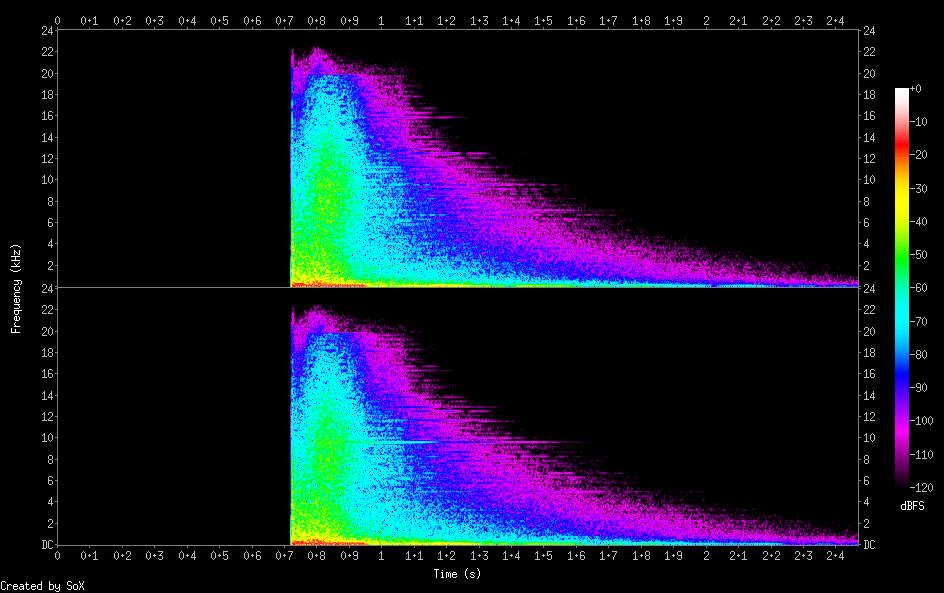

Dash
/sfx/dash/dash.rb
kdefine :dash do
with_fx :reverb do
sample :loop_breakbeat, start: 0.6, finish: 0.75, rate: 1.3, cutoff: 90
sample :perc_swash, rate: 1.0, amp: 0.5
sample :sn_zome, amp: 0.3, rate: 1.2
use_synth :sc808_snare
use_synth :bnoise
play :c5, decay: 0.1, amp: 0.3, release: 0.1, sustain: 0
end
end
# live_loop :dash do
# dash
# sleep 1.2
# end
dash